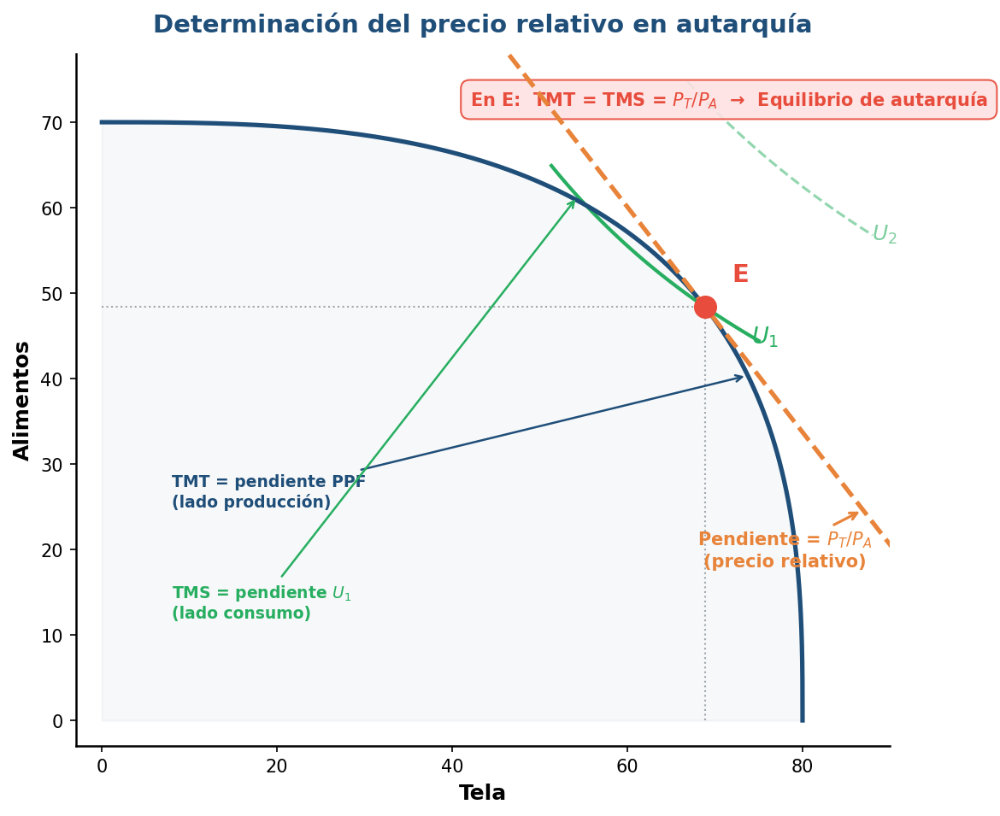
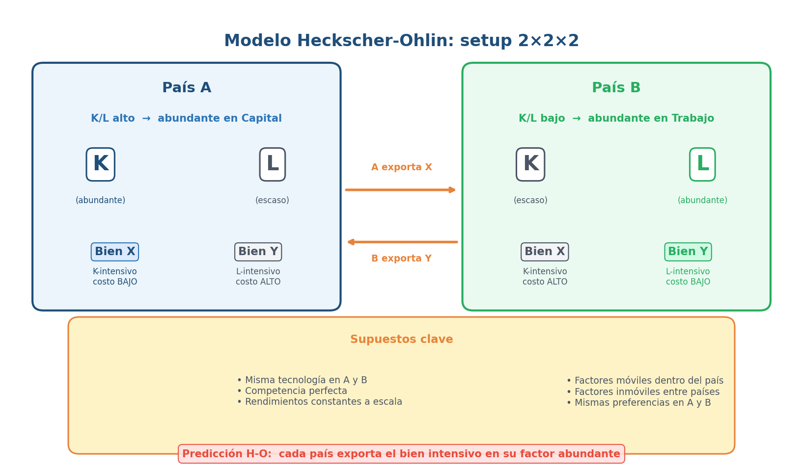
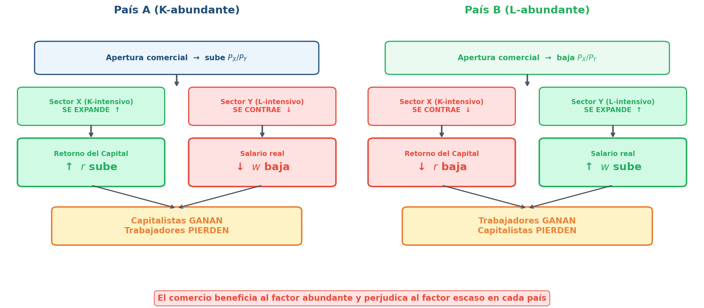
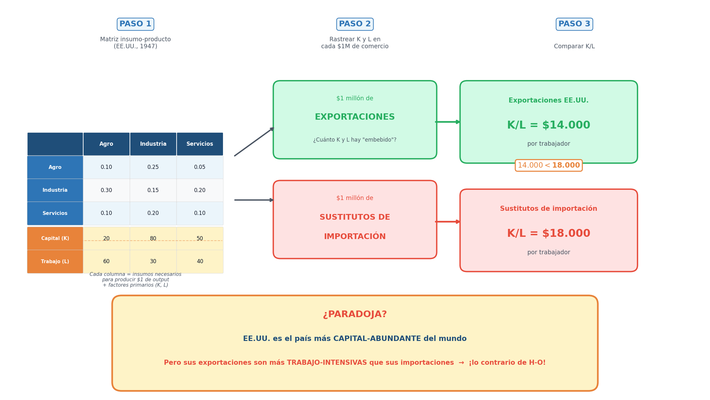

Economía Internacional — Clase 3
¿Leyeron la bibliografía?
P1 — Smith vs mercantilistas
¿Qué entiende Smith por "riqueza" y en qué se diferencia de la visión mercantilista?
- A) Para Smith la riqueza es la acumulación de oro y plata, igual que para los mercantilistas
- B) Los mercantilistas miden riqueza por metales preciosos; Smith la redefine como la capacidad productiva de un país (bienes y servicios que puede generar)
- C) Smith y los mercantilistas coinciden en que la riqueza depende de tener superávit comercial permanente
- D) Para Smith la riqueza es el stock de capital financiero; para los mercantilistas es la tierra
P1 — Respuesta: B
- Los mercantilistas medían la riqueza por la acumulación de metales preciosos (oro, plata) → el comercio era un juego de suma cero. Smith rompe con esto: la riqueza de una nación es el flujo de bienes y servicios que puede producir. Más producción = más riqueza, independientemente del oro acumulado
- ¿Por qué no las otras?
- A: invierte a Smith — él rechaza explícitamente la ecuación riqueza = metales
- C: Smith critica la obsesión por el superávit; para él, el comercio es de suma positiva
- D: la tierra es la medida de riqueza de los fisiócratas, no de los mercantilistas
P2 — División del trabajo y comercio
¿Por qué la división del trabajo depende del tamaño del mercado? ¿Qué rol cumple el comercio?
- A) La división del trabajo no depende del mercado; depende solo de la tecnología disponible
- B) Un mercado más grande permite mayor especialización porque hay demanda suficiente para justificar producir una sola cosa; el comercio amplía el mercado más allá de las fronteras
- C) El comercio reduce la división del trabajo porque obliga a producir lo que demanda el exterior
- D) La división del trabajo solo funciona dentro de una fábrica, no entre países
P2 — Respuesta: B
- Es la cadena causal central de Smith: mercado más grande → cada productor puede especializarse más → sube la productividad → todos ganan. El comercio internacional amplía el mercado más allá del tamaño del país. Por eso Smith defiende el libre comercio: no es ideología, es que un mercado más grande permite más división del trabajo
- ¿Por qué no las otras?
- A: Smith dice explícitamente que la extensión del mercado es el LÍMITE de la división del trabajo
- C: al contrario — el comercio permite MAYOR especialización, no menor
- D: Smith aplica el principio de la fábrica de alfileres a países enteros
P3 — Ventaja absoluta vs comparativa
¿Cuál es la diferencia entre ventaja absoluta y ventaja comparativa? ¿Por qué la segunda es más potente?
- A) Son lo mismo: el país que produce más barato tiene ambas ventajas
- B) Ventaja absoluta = producir con menos recursos; ventaja comparativa = menor costo de oportunidad. La comparativa es más potente porque demuestra que TODOS los países pueden ganar con el comercio, incluso los menos eficientes
- C) La ventaja comparativa solo aplica cuando ambos países tienen el mismo nivel de desarrollo
- D) La ventaja absoluta es de Ricardo y la comparativa es de Smith
P3 — Respuesta: B
- Ventaja absoluta (Smith): producir un bien con menos recursos que otro país. Problema: ¿qué pasa con un país que no tiene ventaja absoluta en nada? Smith no puede explicar por qué comerciaría
- Ventaja comparativa (Ricardo): especializarse donde el costo de oportunidad es MENOR. Incluso si un país es peor en todo, tiene ventaja comparativa en algo. Siempre hay base para el comercio mutuamente beneficioso
- ¿Por qué no las otras?
- A: un país puede tener ventaja absoluta en todo pero comparativa solo en algunos bienes
- C: aplica a cualquier par de países, sin importar desarrollo
- D: es al revés — absoluta es de Smith, comparativa es de Ricardo
P4 — Modelo ricardiano
En el modelo ricardiano, ¿de dónde surgen las diferencias de precios relativos entre países?
- A) De las diferencias en dotaciones de capital y trabajo (modelo H-O)
- B) De las diferencias en productividad del trabajo (tecnología), que generan distintos costos de oportunidad
- C) De las diferencias en tamaño del mercado interno
- D) De la intervención del gobierno en los precios
P4 — Respuesta: B
- En Ricardo hay un solo factor (trabajo) y la tecnología difiere entre países. Si en un país se necesitan 10 horas para hacer vino y 20 para hacer tela, el costo de oportunidad del vino es 0,5 telas. En otro país con tecnología distinta, esos costos son diferentes → precios relativos distintos → base para el comercio
- ¿Por qué no las otras?
- A: las dotaciones de factores son la respuesta de H-O, no de Ricardo — eso lo vemos hoy
- C: el tamaño del mercado importa en Smith y en Krugman (Unidad 3), no en Ricardo
- D: Ricardo supone mercados competitivos sin intervención estatal
P5 — Precio mundial
¿Qué condiciones debe cumplir el precio mundial para que ambos países ganen con el comercio?
- A) Debe ser igual al precio de autarquía del país más grande
- B) Debe estar entre los precios relativos de autarquía de ambos países
- C) Debe ser fijado por un organismo internacional (OMC o FMI)
- D) Debe ser menor que el costo de producción de ambos países
P5 — Respuesta: B
- Si el país A tiene precio relativo de autarquía \(P_A\) y el país B tiene \(P_B\), el precio mundial \(P_W\) debe cumplir: \(P_A < P_W < P_B\). Así, A exporta el bien donde tenía precio más bajo (ahora vende más caro) y B importa ese bien (ahora compra más barato). Ambos mejoran respecto a la autarquía
- ¿Por qué no las otras?
- A: si el precio mundial coincide con el de un país, ese país no gana ni pierde — solo gana el otro
- C: el precio mundial surge de la oferta y demanda relativa mundial, no de un organismo
- D: no tiene sentido económico — algún país tiene que poder producir el bien
P6 — PPF y ganancias del comercio
¿Qué es la PPF y por qué con comercio se puede consumir "fuera" de ella?
- A) La PPF muestra las combinaciones máximas de producción; con comercio se puede consumir fuera porque el país se endeuda
- B) La PPF muestra las combinaciones máximas de producción; con comercio el país se especializa, exporta e importa a precios mundiales, alcanzando combinaciones de CONSUMO inalcanzables en autarquía
- C) Con comercio la PPF se desplaza hacia afuera porque aumenta la cantidad de factores
- D) La PPF no cambia y el consumo tampoco — el comercio solo redistribuye, no crea riqueza
P6 — Respuesta: B
- La PPF marca el límite de lo que un país puede producir. Sin comercio, produce = consume. Con comercio: se especializa (produce más de un bien, menos de otro), exporta el excedente e importa lo que no produce. La línea de precios mundiales permite alcanzar combinaciones de consumo fuera de la PPF — esa es la ganancia del comercio
- ¿Por qué no las otras?
- A: no es deuda — es intercambio voluntario. Exportás algo para importar otra cosa
- C: la PPF no se mueve (los factores no cambian); lo que cambia es el conjunto de consumo posible
- D: el comercio SÍ crea riqueza en el agregado — ambos países consumen más
P7 — Pregunta integradora
Pensando en Argentina: ¿su patrón exportador refleja ventajas comparativas genuinas o hay otros factores en juego?
- A) Argentina exporta lo que exporta puramente por ventaja comparativa ricardiana: es más productiva en soja y granos, punto
- B) El patrón exportador refleja ventajas comparativas (abundancia de tierra fértil) pero también decisiones de política (tipo de cambio, aranceles, retenciones), historia (ISI, desindustrialización) y demanda externa (China). No es solo productividad
- C) Argentina no tiene ventajas comparativas en nada; exporta commodities porque no sabe hacer otra cosa
- D) Las ventajas comparativas no aplican a países en desarrollo — son una teoría para países ricos
P7 — Respuesta: B
- Argentina tiene ventajas comparativas genuinas en producción agropecuaria (tierra fértil, clima, pampa húmeda). Pero el patrón exportador también refleja: tipo de cambio (peso apreciado desincentiva industria), política comercial (retenciones al agro, protección industrial), historia (décadas de ISI + desindustrialización), y demanda china que reforzó la especialización primaria
- ¿Por qué no las otras?
- A: reduccionista — ignora que la política y la historia moldean el patrón comercial
- C: Argentina SÍ tiene ventajas comparativas en agro, no es que "no sabe hacer otra cosa"
- D: las ventajas comparativas aplican a todos los países — otra cosa es que sean suficientes para explicar todo
Repaso rápido: ¿qué sabemos hasta acá?
Los clásicos nos dieron un motor potente... pero con limitaciones
- Smith: el comercio amplía el mercado → más especialización → más productividad
- Ricardo: ventaja comparativa por costos relativos (no absolutos) → ambos ganan
- Herramienta: PPF lineal, 1 factor (trabajo), especialización total
- Pero: ¿de dónde sale la diferencia de tecnología? ¿Quién gana y quién pierde dentro del país? ¿La especialización es siempre total?
Agenda de hoy
- Las limitaciones de Ricardo: ¿qué falta en el modelo clásico?
- Contexto histórico: la revolución marginalista y Haberler
- El salto técnico: PPF curva, curvas de indiferencia, especialización parcial
- Del equilibrio interno al comercio: oferta/demanda relativa y precio mundial
- Heckscher-Ohlin: dotaciones como fuente de ventaja comparativa
- Teoremas: Stolper-Samuelson, Rybczynski y FPE
- Evidencia: la Paradoja de Leontief y los límites de H-O
- Argentina: dotaciones, apertura y conflicto distributivo
Cinco limitaciones del modelo ricardiano
- 1 solo factor (trabajo): no hay capital, ni tierra, ni trabajo calificado vs no calificado → no puede hablar de distribución del ingreso
- PPF recta: costo de oportunidad constante → especialización siempre total (todo o nada)
- Tecnología diferente entre países: ¿por qué? Ricardo no lo explica — la toma como dada
- Sin preferencias: los consumidores no aparecen, no hay oferta ni demanda — solo costos
- Mundo de 2×2×1: dos países, dos bienes, un factor. ¿Qué pasa con más factores, más bienes, más países?
Antes de avanzar: ¿qué significa "marginal"?
- Utilidad marginal: satisfacción que te da una unidad MÁS de consumo
- Costo marginal: costo de producir una unidad MÁS
- Producto marginal: cuánto produce un trabajador ADICIONAL
- La idea central: los agentes deciden comparando beneficio marginal vs costo marginal. Consumís hasta que utilidad marginal = precio. Producís hasta que costo marginal = precio
- Esto resuelve la paradoja del agua y los diamantes: el agua es útil pero barata (utilidad marginal baja, hay mucha); los diamantes son menos útiles pero caros (utilidad marginal alta, hay pocos). El valor depende del margen, no del total
La revolución marginalista (1870s): un cambio de paradigma
- 1871-1874: tres autores publican casi al mismo tiempo: Jevons (Inglaterra), Menger (Austria), Walras (Suiza)
- Antes (clásicos): el valor viene del trabajo incorporado; el análisis es por clases sociales (renta, salarios, ganancias)
- Después (marginalistas): el valor viene de la utilidad marginal y la escasez; el análisis es de individuos que deciden en el margen
- Nueva herramienta: equilibrio general (Walras) — todos los mercados se determinan simultáneamente
- Para comercio internacional: se puede reformular la ventaja comparativa sin depender de la teoría del valor-trabajo → abre la puerta a Haberler y H-O
Gottfried Haberler (1900-1995): la PPF sin valor-trabajo
- Economista austríaco, formado en Viena con Mises y Hayek. Emigra a EEUU (Harvard, 1936)
- Obra clave: The Theory of International Trade (1936)
- Contribución fundamental: reformula la frontera de posibilidades de producción usando costos de oportunidad, sin necesitar la teoría del valor-trabajo
- Esto permite: múltiples factores de producción → la PPF se curva → especialización parcial
- Haberler construye la caja de herramientas que después usarán Heckscher, Ohlin, Samuelson
Contexto: las teorías nacen en un mundo convulsionado
- 1914-1918: la Primera Guerra Mundial destruye la primera globalización
- 1919: Heckscher publica su artículo seminal sobre dotaciones y comercio
- 1929-1930: crisis financiera → Smoot-Hawley (EEUU sube aranceles a niveles récord) → guerra comercial global
- 1933: Ohlin publica Interregional and International Trade en plena Gran Depresión
- 1936: Haberler reformula la PPF → el modelo estándar toma forma mientras el comercio mundial se desploma
- Paradoja: las teorías que justifican el libre comercio se escriben en la época de mayor proteccionismo del siglo XX
La tríada en el período neoclásico
- Tecnología: el modelo neoclásico ASUME que es igual entre países. Gran cambio: si todos tienen la misma tecnología, la ventaja comparativa viene de OTRO lado → dotaciones de recursos
- Poder: la hegemonía británica se derrumba, EEUU asciende pero no lidera aún. Vacío de poder → proteccionismo, guerras comerciales, colapso del patrón oro
- Comercio: las reglas se quiebran. No hay orden multilateral (la OMC no existe hasta 1995, el GATT recién en 1947). Cada país pone aranceles como quiere → el comercio se desploma
- Implicancia política del modelo: si la ventaja viene de dotaciones "naturales" (tierra, capital, trabajo), la especialización parece inevitable — argumento potente para el libre comercio
¿Qué cambia cuando hay más de un factor?

- Ricardo (1 factor): costo de oportunidad constante → PPF recta → especialización total
- Un solo factor (trabajo): reasignar recursos siempre tiene el mismo costo

- Neoclásico (2+ factores): costo de oportunidad creciente → PPF cóncava → especialización parcial
- Al reasignar recursos, los factores no son igualmente productivos en ambos bienes
- La PPF curva refleja que cada unidad adicional del bien cuesta más que la anterior
Rendimientos decrecientes: la razón técnica de la PPF curva

- Con 2 factores (L y K), los sectores tienen distinta intensidad factorial
- En la zona plana de la PPF: ganar tela cuesta poco alimento
- Ejemplo: +21 tela cuesta solo -4 alimentos → costo de oportunidad bajo

- Al seguir reasignando factores, hay desajuste: sobra capital, falta trabajo especializado
- En la zona empinada: ganar tela cuesta mucho alimento
- Ejemplo: +12 tela cuesta -33 alimentos → costo de oportunidad alto
- Resultado: la PPF se curva → costo de oportunidad creciente
Los supuestos: ¿en qué mundo estamos?
- 2 países (A y B), 2 bienes (tela y alimentos), 2 factores (trabajo L y capital K)
- Misma tecnología en ambos países (mismas funciones de producción)
- Rendimientos decrecientes en cada factor
- Competencia perfecta en todos los mercados (bienes y factores)
- Factores móviles entre sectores dentro del país, pero inmóviles entre países
- Mismos gustos en ambos países (mismas curvas de indiferencia)
- Sin costos de transporte ni barreras al comercio
- La única diferencia entre países: distinta dotación relativa de factores (K/L)
Lo que faltaba en Ricardo: las preferencias de los consumidores

- La PPF curva muestra todas las combinaciones posibles de producción
- Con costos de oportunidad crecientes, hay múltiples puntos eficientes sobre la frontera
- ¿Cuál elige el país? Necesitamos las preferencias

- Curva de indiferencia U₁: combinaciones que dan la misma utilidad. Más lejos del origen = mayor bienestar
- Punto E: donde la PPF es tangente a la curva de indiferencia más alta alcanzable
- En autarquía: producción = consumo → el país produce y consume en E

- La pendiente en E = precio relativo de autarquía (Pt/Pa)
- U₂ es inalcanzable en autarquía: la PPF no llega
- Clave: el comercio permitirá alcanzar curvas de indiferencia más altas
Distintas dotaciones → distintos precios en autarquía

- País A (izq): abundante en capital → PPF sesgada hacia tela
- País B (der): abundante en trabajo → PPF sesgada hacia alimentos
- Misma tecnología, mismos gustos — la diferencia viene SOLO de las dotaciones

- Equilibrio de autarquía en País A: tangencia PPF ∩ U₁ → punto E_A
- La pendiente en E_A es el precio relativo: Pt/Pa bajo (tela barata)
- A tiene mucho K → le resulta fácil producir tela → tela es relativamente barata

- Equilibrio de autarquía en País B: tangencia PPF ∩ U₁ → punto E_B
- La pendiente en E_B: Pt/Pa alto (tela cara)
- Precios relativos difieren → hay incentivos para comerciar (igual que en Ricardo, pero por otra razón)
¿Cómo se determina el precio relativo en autarquía?

- En el punto de tangencia: \(TMT = TMS = P_T / P_A\)
- TMT: pendiente de la PPF = cuántos alimentos sacrifico por 1 tela más (producción)
- TMS: pendiente de la curva de indiferencia = cuántos alimentos estoy dispuesto a ceder por 1 tela más (consumo)
- Cuando TMT = TMS → equilibrio
- Cada país tiene su propio precio → si difieren → base para el comercio
¿Cómo se determina el precio mundial?

- OR (País A): cuánta tela vs alimentos produce A a cada precio relativo. Pendiente positiva
- DR: demanda relativa mundial. Pendiente negativa (mismos gustos)
- Intersección → precio de autarquía de A: Pa = 1.5 (tela barata, abundante en K)

- OR (País B): B produce menos tela relativa → OR más a la izquierda
- Intersección → precio de autarquía de B: Pb = 1.9 (tela cara, escasa en K)
- Rango de precios: el precio mundial caerá entre Pa y Pb

- OR mundial (ponderada): combina las ofertas de A y B
- Intersección OR mundial ∩ DR → precio mundial Pt/Pa = 1.7
- Cae entre Pa (1.5) y Pb (1.9) → ambos países ganan del comercio
Ganancias del comercio: consumir fuera de la PPF

- Autarquía: producción = consumo en el punto E (tangencia PPF + curva de indiferencia)
- El país está sobre la PPF y sobre la curva de indiferencia U₁

- Con comercio: nuevo precio relativo mundial (distinto al de autarquía)
- El país ajusta producción hacia el bien donde tiene ventaja → se mueve de E a Q sobre la PPF

- Produce en Q pero consume en C (sobre la línea de precios mundiales, fuera de la PPF)
- La diferencia entre Q y C es lo que exporta e importa
- Resultado: curva de indiferencia más alta (U₂ > U₁) → mayor bienestar
El anticipo de Heckscher-Ohlin
- En el modelo estándar, la forma de la PPF depende de las dotaciones de factores (cuánto K y L tiene el país)
- País abundante en capital → PPF sesgada a tela → tela barata → exporta tela
- País abundante en trabajo → PPF sesgada a alimentos → alimentos baratos → exporta alimentos
- Predicción: cada país exporta el bien que usa intensivamente su factor abundante
- Esto es la intuición central del modelo Heckscher-Ohlin → lo formalizamos a continuación
Tabla comparativa: ¿qué cambia?

- Factores: Ricardo = 1 (trabajo) → Neoclásico = 2+ (trabajo + capital)
- PPF: Ricardo = recta → Neoclásico = curva (cóncava)
- Costo de oportunidad: Ricardo = constante → Neoclásico = creciente
- Especialización: Ricardo = total → Neoclásico = parcial
- Fuente de ventaja comparativa: Ricardo = tecnología → Neoclásico = dotaciones
- Preferencias: Ricardo = no importan → Neoclásico = curvas de indiferencia
- En común: precios relativos diferentes → comercio → ganancias para ambos
Heckscher-Ohlin
De Ricardo a Heckscher-Ohlin: cuando el conflicto distributivo entra al modelo
- Ricardo (Clase 2): comercio por diferencias de productividad/tecnología → ganancias agregadas
- Modelo neoclásico (primera parte de hoy): precios relativos, oferta y demanda relativa → marco general
- Hoy — Heckscher-Ohlin: comercio por dotaciones de factores (K/L, tierra, calificación)
- Gran novedad: el comercio cambia la distribución del ingreso (salarios vs rentas)
- Secuencia lógica: Dotaciones → costos relativos → precios relativos → patrón de comercio → distribución
Heckscher, Ohlin y Samuelson — El trío que armó el edificio H-O
- Eli Heckscher (Suecia, principios s. XX): la intuición — "un país exporta lo que usa intensivamente su factor abundante"
- Bertil Ohlin (alumno de Heckscher, Nobel 1977): convierte la intuición en teoría general de equilibrio — dotaciones → costos → precios → comercio. Fue político (líder del Partido Liberal sueco)
- Paul Samuelson (MIT, EE.UU., Nobel 1970): lo vuelve teorema demostrable. Con Stolper cristaliza el resultado "picante": apertura = ganadores y perdedores
- Frase para recordar: "Heckscher dice qué exportás. Ohlin dice cómo funciona. Samuelson dice por qué tu cuñado discute de comercio en los asados"
El modelo Heckscher-Ohlin: setup 2×2×2

- 2 países: A (K-abundante) y B (L-abundante)
- 2 bienes: \(X\) (K-intensivo) e \(Y\) (L-intensivo)
- 2 factores: Capital (\(K\)) y Trabajo (\(L\))
- Supuestos: misma tecnología, competencia perfecta, rendimientos constantes
- Predicción: cada país exporta el bien intensivo en su factor abundante
Dotaciones → costos → precios relativos en autarquía

- País A (izq): K-abundante → PPF sesgada hacia X (intensivo en K)
- País B (der): L-abundante → PPF sesgada hacia Y (intensivo en L)
- Misma tecnología → la diferencia viene SOLO de las dotaciones

- Equilibrio de autarquía en A: punto \(E^A\)
- \(K/L\) alto → costo relativo de \(X\) menor → \(P_X/P_Y\) bajo (X barato)

- Equilibrio de autarquía en B: punto \(E^B\)
- \(K/L\) bajo → costo relativo de \(Y\) menor → \(P_X/P_Y\) alto (X caro)
- Si \((P_X/P_Y)^A < (P_X/P_Y)^B\) → aparece incentivo a comerciar
Apertura comercial en H-O: precio mundial y patrón de comercio

- En autarquía, País A (K-abundante) tiene \(P_X/P_Y\) bajo (X es barato porque hay mucho K)

- País B (L-abundante) tiene \(P_X/P_Y\) alto (X es caro porque K es escaso)
- Los precios difieren → hay base para comerciar

- Con comercio aparece \(P^W\) entre ambos precios de autarquía
- País A: \(P_X\) sube → produce más \(X\) → exporta X (el bien intensivo en su factor abundante)
- País B: \(P_X\) baja → produce más \(Y\) → exporta Y
Teorema de Heckscher-Ohlin
La predicción central del modelo
- Un país exporta el bien que usa intensivamente su factor relativamente abundante e importa el bien que usa intensivamente su factor relativamente escaso
- Diferencia con Ricardo: el patrón de comercio sale de las dotaciones, no de la tecnología (que acá es igual entre países)
- Ejemplo: Argentina (abundante en tierra) exporta alimentos (intensivos en tierra) e importa maquinaria (intensiva en capital)
- La pregunta que abre: si el comercio cambia precios relativos, y los bienes usan factores de forma distinta... ¿quién gana y quién pierde dentro del país?
Stolper-Samuelson: del precio del bien al ingreso del factor

- Con apertura comercial, el precio relativo de un bien cambia
- Ejemplo: en el país K-abundante, sube el precio del bien K-intensivo (se vuelve más rentable producirlo)

- El sector más rentable se expande: las empresas producen más de ese bien
- Para expandirse, necesita más del factor que usa intensivamente (capital)

- Sube la demanda de capital → todos lo quieren → su retorno sube
- El otro sector (L-intensivo) se contrae → sobra trabajo relativo

- Resultado: sube el retorno del capital (r), baja el salario real (w)
- El factor usado intensivamente en el bien cuyo precio subió gana; el otro pierde
- Si sabés qué precios cambian, podés anticipar quién apoya y quién resiste la apertura
¿Quién gana y quién pierde con el comercio?

- País A (K-abundante): apertura → sube precio de X → ganan los capitalistas, pierden los trabajadores
- País B (L-abundante): apertura → baja precio de X → ganan los trabajadores, pierden los capitalistas
- Regla general: el comercio beneficia al factor abundante y perjudica al escaso
- Traducción política: la apertura genera ganadores y perdedores — por eso genera conflicto
- Siguiente pregunta: Stolper-Samuelson analiza qué pasa cuando cambian los precios. Pero ¿qué pasa cuando cambian las dotaciones?
Tadeusz Rybczynski (1923-1998)
- Economista polaco naturalizado inglés, London School of Economics
- Publica una nota cortísima en Economica (1955): "Factor Endowment and Relative Commodity Prices"
- Un paper, un teorema eterno: usa el box diagram de Stolper-Samuelson para mostrar qué pasa cuando cambian las dotaciones (no los precios)
- Contexto de posguerra: acumulación de capital, reconstrucción europea, migraciones → ¿cómo reconfiguran la estructura productiva?
- Después pasó al sector financiero (Lazard) — el "one-hit wonder" académico por excelencia
Teorema de Rybczynski: shock de dotaciones → cambio estructural

- Si ↑ \(K\): producción de \(X\) sube más que proporcionalmente, producción de \(Y\) cae
- No es "crece todo un poco": cambia la composición

- Si ↑ \(L\): producción de \(Y\) sube más que proporcionalmente, producción de \(X\) cae
- El factor que crece "empuja" al sector que lo usa más intensivamente
- Útil para pensar desarrollo: inversión, migración, recursos → reconfiguran estructura productiva
Tercer teorema: ¿el comercio iguala salarios entre países?
- Lógica: libre comercio → precios de bienes se igualan → costos de producción se alinean → precios de factores convergen entre países
- Resultado: sin que migren trabajadores ni capital, el comercio de bienes tiende a igualar salarios y retornos al capital entre países
- Supuestos necesarios (muy fuertes): misma tecnología, mismos bienes producidos, competencia perfecta, cero costos de comercio
- Pregunta clave: si esto fuera cierto, ¿por qué un obrero en Bangladesh gana 10 veces menos que uno en Alemania?
- Respuesta: porque fallan casi todos los supuestos — tecnología distinta, aranceles, fletes, instituciones, informalidad
- Utilidad: no como predicción literal, sino como benchmark para identificar qué fricciones impiden la convergencia
El modelo H-O y sus tres teoremas

- Modelo H-O (predicción central): dotaciones → patrón de comercio (qué exporta cada país)
- Teorema 1 — Stolper-Samuelson (1941): si cambian los precios → cambia la distribución del ingreso
- Teorema 2 — Rybczynski (1955): si cambian las dotaciones → cambia la estructura productiva
- Teorema 3 — FPE (Samuelson, 1948): el comercio de bienes → convergencia de precios de factores
- Los tres son extensiones formalizadas por Samuelson dentro del mismo modelo 2×2×2
Wassily Leontief (1906-1999)
- Economista ruso-estadounidense, profesor en Harvard
- Creó el método de matrices insumo-producto (input-output): cómo cada sector depende de los demás
- Nobel de Economía 1973 por ese método y sus aplicaciones
- En 1953 publica un test empírico de H-O con datos de EE.UU. (1947)
- Método: calcular cuánto K y L está "embebido" en exportaciones vs importaciones
- Resultado: lo contrario de lo que predecía H-O → "Paradoja de Leontief"
¿Cómo midió Leontief el contenido factorial del comercio?

- Paso 1: construir la matriz insumo-producto (qué insumos usa cada sector)
- Paso 2: rastrear cuánto capital (K) y trabajo (L) hay "embebido" en \(1M de exportaciones vs \)1M de sustitutos de importación
- Paso 3: comparar K/L → exportaciones = \(14.000/trabajador, importaciones = \)18.000/trabajador
- Resultado: las exportaciones de EE.UU. son más trabajo-intensivas que sus importaciones
La Paradoja de Leontief: cuando el test empírico no calza

- Predicción H-O: EE.UU. (K-abundante) → exporta bienes K-intensivos
- Hallazgo de Leontief: exportaciones de EE.UU. relativamente más L-intensivas que las importaciones
- Es una "paradoja" respecto de H-O, no un error de medición trivial
- Lectura: el mundo real tiene más dimensiones que 2×2×2
- No "mata" H-O: lo obliga a volverse más realista
Explicaciones de la Paradoja de Leontief y límites de H-O
- Trabajo no homogéneo: distinguir calificado vs no calificado (capital humano) — EE.UU. exportaba bienes intensivos en skills
- Tecnología distinta: productividad/innovación hace que Ricardo "vuelva" — no solo dotaciones
- Más de 2 factores: tierra, recursos naturales, energía, capacidad organizacional
- Protección y fricciones: aranceles, cuotas, costos de transporte, barreras no arancelarias distorsionan el patrón
- Problemas de medición: cómo medir capital, intensidad factorial "embebida", año base de los datos
- Conclusión: H-O funciona mejor como mecanismo (dotaciones → precios → comercio) que como predicción literal
Factores específicos: cuando el conflicto es por sector
- 2 bienes: \(X\) e \(Y\). 1 factor móvil: Trabajo (\(L\)). 2 factores específicos: \(K_X\) y \(K_Y\)
- Si ↑ \(P_X\):
- Gana \(K_X\) (el factor específico del sector que sube)
- Pierde \(K_Y\) (el factor atrapado en el sector que pierde)
- Trabajo (\(L\), móvil): efecto ambiguo — depende de la canasta de consumo
- En el corto plazo: coaliciones por sector (exportador vs import-competing), no solo por factor
- Diferencia clave con Stolper-Samuelson: horizonte temporal y movilidad de factores
Argentina: dotaciones, apertura y conflicto distributivo

- Lente H-O: Argentina abundante en recursos naturales/tierra → exporta bienes asociados (agro, energía)
- Lente Stolper-Samuelson: suba de precios de commodities → ↑ renta de la tierra, tensión sobre salarios
- Lente factores específicos: apertura puede golpear sectores industriales que no se reconvierten rápido
- Mediaciones argentinas: tipo de cambio, retenciones, restricción externa, instituciones laborales
- Preguntas para debate: ¿Qué grupos apoyan apertura? ¿Cambian ganadores entre corto y largo plazo?
¿Qué nos llevamos hoy?
- Marco neoclásico estándar: PPF curva (más de 1 factor), curvas de indiferencia, especialización parcial, oferta/demanda relativa → precio mundial
- Mecanismo H-O: dotaciones → costos → precios relativos → comercio → distribución
- Resultado clave: el comercio tiene efectos distributivos — Stolper-Samuelson (largo plazo, por factor) y factores específicos (corto plazo, por sector)
- Rybczynski: cambios en dotaciones reconfiguran la estructura productiva, no todo crece parejo
- FPE: predicción extrema útil como benchmark; en la práctica no se cumple por fricciones
- Leontief: el modelo 2×2×2 no captura skills, tecnología, instituciones → H-O es base, no ley
- Cierra Unidad 2: de Smith a Leontief, tenemos un edificio teórico completo sobre comercio clásico y neoclásico
Evaluación — Unidad 2
- Evaluación multiple choice en la plataforma (5 preguntas)
- Cubre Clases 2 y 3: mercantilistas, Smith, Ricardo, modelo neoclásico, H-O
- Algunas preguntas requieren procesar datos (no es solo memorizar)
- Para promocionar: todas las evaluaciones con 7 o más
- Se pueden recuperar las evaluaciones que salieron mal
Próxima clase: Rendimientos crecientes y competencia imperfecta
- ¿Por qué países similares comercian entre sí? (comercio Norte-Norte)
- Krugman: economías de escala + competencia monopolística → comercio por variedades
- El comercio ya no es solo entre países "distintos" (H-O) sino también entre países "parecidos"
- Un modelo que explica por qué Alemania le vende autos a Francia y Francia le vende autos a Alemania
Material complementario
- 🎬 Juego sin límites: La mentira del libre comercio (DW Documental, 42 min, español) — Cómo funciona realmente el comercio internacional: entre la teoría del libre comercio y la práctica proteccionista
- 🎬 1929: The Great Crash (BBC, 60 min, inglés) — El crack del '29, Smoot-Hawley y el colapso del comercio mundial en los años '30
- 📺 Crash Course Economics #2: Specialization and Trade (YouTube, 11 min, inglés con subs) — Ventaja comparativa, costo de oportunidad y PPF explicados con animaciones
- 🎥 Ferris Bueller's Day Off — La escena de Ben Stein (2 min, YouTube) — "Anyone? Anyone?" La explicación más famosa (y aburrida) de Smoot-Hawley en el cine
- 📺 MRU — "The Heckscher-Ohlin Theorem" (Marginal Revolution University, YouTube, 10 min, inglés con subs) — Explicación visual clara del modelo H-O. Ideal como repaso rápido
- 🎬 "American Factory" (Netflix, 2019, Oscar al Mejor Documental, 110 min) — Fábrica china en planta ex-GM en Ohio: capital vs trabajo, tensiones distributivas reales
- 🎬 "Globalización: ganadores y perdedores" (DW Documental, 42 min, español) — Agricultores pro-Trump, la Ruta de la Seda, Perú: conflicto distributivo global
Lecturas para esta clase
- Obligatoria: Lugones, G. et al. Teorías del Comercio Internacional — Sección 1.2: "Los neoclásicos (Heckscher-Ohlin): diferencias en la dotación de factores" (pp. 25-30)
- Obligatoria: Krugman, Obstfeld & Melitz (9a ed.) — Cap. 5: "Recursos y comercio: el modelo Heckscher-Ohlin" y Cap. 6: "El modelo estándar de comercio"
- Complementaria: Krugman et al. — Cap. 4: "Factores específicos y distribución de la renta"
- Complementaria: Steinberg, F. (2004) — La nueva teoría del comercio internacional y la política comercial estratégica, ICEI/UAM (puente a Unidad 3)
- Complementaria: Leontief, W. (1953) — "Domestic Production and Foreign Trade: The American Capital Position Re-Examined", Proceedings of the American Philosophical Society (en inglés, 10 páginas). El paper original de la Paradoja de Leontief
Guía de lectura — Unidad 2
- ¿Cuál es la diferencia fundamental entre ventaja absoluta (Smith) y ventaja comparativa (Ricardo)? → Lugones cap. 1, pp. 13-20; Krugman cap. 3
- ¿Por qué la PPF del modelo neoclásico es curva y no recta como en Ricardo? → Krugman cap. 5, sección "El modelo estándar"
- En el modelo H-O, ¿de dónde viene la ventaja comparativa si la tecnología es igual entre países? → Lugones cap. 1, pp. 24-30; Krugman cap. 5
- ¿Qué predice Stolper-Samuelson sobre ganadores y perdedores del comercio? → Krugman cap. 5; Lugones cap. 1, pp. 27-29
- ¿Qué encontró Leontief y por qué se llama "paradoja"? → Lugones cap. 1, pp. 29-30; Leontief (1953)
- ¿Cómo se aplica H-O al caso argentino (dotaciones, conflicto distributivo)? → Krugman cap. 5; Lugones cap. 1
- ¿Qué diferencia hay entre el conflicto por factor (S-S) y por sector (factores específicos)? → Krugman caps. 4-5